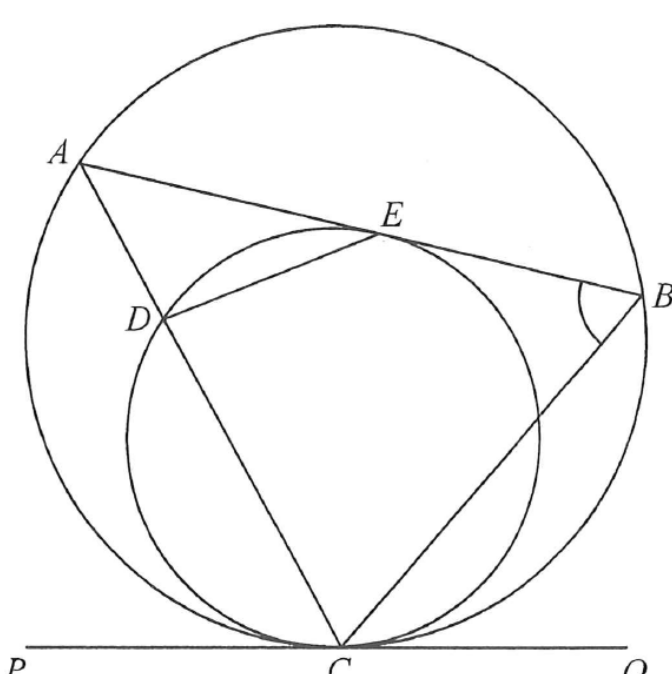

圓形 · 切線與內錯弓形的角

$$\angle CDE=180^{\circ}-100^{\circ}=80^{\circ}$$
因 $AB$ 是圓 $CDE$ 於 $E$ 的切線，故
$$\angle BEC=\angle CDE=80^{\circ}$$
同理，在 $C$ 的公切線 $PQ$ 與弦 $CE$ 給出 $\angle ECQ=\angle CDE=80^{\circ}$。
$$\angle BCE=\angle ECQ-\angle BCQ=80^{\circ}-35^{\circ}=45^{\circ}$$
$$\angle CBE=180^{\circ}-45^{\circ}-80^{\circ}=55^{\circ}$$
因 $A$、$E$、$B$ 在同一直線上（$AB$ 為切線），$\angle ABC=\angle CBE=55^{\circ}$。答案 A。